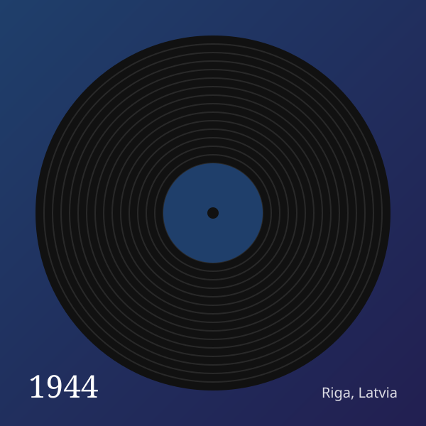

A prayer under occupation, and the tape that outlived the ban

Lūcija Garūta wrote the cantata Dievs, Tava zeme deg! ("God, Thy Land Is Burning!") to words by Andrejs Eglītis while Latvia was being ground between two occupations. At its premiere on 15 March 1944 she played the organ herself, before a packed church and a crowd outside.
A tape of that premiere survives. One account says you can hear the war outside on it. The Soviet regime later suppressed the cantata. It came back by candlelight at the 1990 Song Festival, when the country was singing its way out.